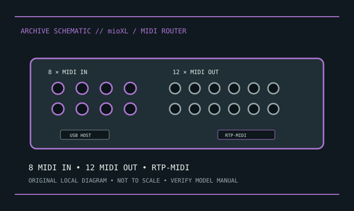

[ INDIVIDUAL COMPONENT // SOUND HARDWARE ]
iConnectivity mioXL
mioXL combines computer USB, USB-host MIDI devices, DIN MIDI, and Ethernet RTP-MIDI networking. Save its routing configuration before reset.

Model-specific specifications
| Product | iConnectivity mioXL; distinct from mioXM and earlier mio interfaces. |
|---|---|
| Computer/network | USB computer connection and Ethernet RTP-MIDI networking; network MIDI is not audio-over-IP. |
| DIN | Eight 5-pin MIDI inputs and twelve 5-pin MIDI outputs. |
| USB host | Four USB-A host ports for supported MIDI devices; consult docs for current and device limits. |
| Routing/power | Auracle software configures routing, filters and merges. External power; not a passive splitter. |
| Drivers/OS | Manufacturer lists macOS, Windows, and supported iOS workflows/software by release; verify Auracle and firmware versions. |
Compatibility & preservation
Back up Auracle configuration and label DIN/USB ports before repatching. Save network identity and routing notes; preset restores can redirect ports. Use rated supply and observe USB-device power limits.
- Photograph the model/revision label, connector panel, and installed/bundled accessories before service.
- Retain manufacturer manuals, original driver/firmware packages, and known-working configuration notes with the hardware.
- Use the specified signal level, connector wiring, and power requirements; connector fit alone does not prove compatibility.
Manufacturer sources
- iConnectivity — mioXLManufacturer port counts, RTP-MIDI and routing information.
- iConnectivity — supportManufacturer Auracle, firmware, documentation and OS compatibility.